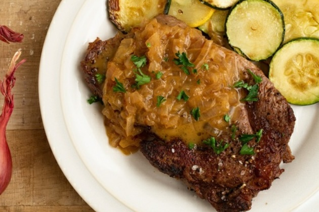

Steak with Shallot Sauce

Description
Get ready for an extreme tasty steak with shallot sauce. Easy to make.
Ingredients
For single meal:
- sirloin steak, raw
1/3 lbs (151g)
- shallots, minced
1/3 shallot (38g)
- vegetable broth
1/8 cup(s) (mL)
- butter
1 tsp (5g)
- oil
1 tsp (5mL)
Steps
- Season steak on all sides with some salt and pepper.
- Heat half of the oil in a skillet over medium-high heat. Add steak and cook to desired doneness, 4-8 minutes per side. Remove steak and set aside to rest.
- Lower heat to medium and add in remaining oil and the shallots to the pan. Stir and cook for about 2 minutes until lightly softened. Stir in vegetable broth and cook for about 2- 4 minutes until the broth is reduced by about half. Turn off the heat and stir in butter until fully melted.
- Pour shallot sauce over steak and serve.